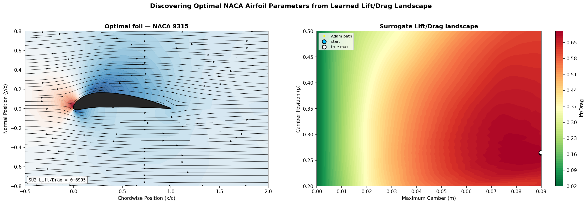

Gradient-Based Airfoil Optimization with Graph Convolutional Networks
Motivation
Aerodynamic shape optimization is expensive. The usual loop wraps a CFD solver inside a black-box optimizer: propose a shape, mesh it, solve the Navier–Stokes equations, read off the lift-to-drag ratio, and repeat. Each evaluation costs minutes of solver time, and because the optimizer treats the solver as a black box it has no access to gradients — it must approximate them with finite differences or fall back on derivative-free search.
This project recreates the results of Shukla, Oommen, Peyvan et al., but replaces their DeepONet surrogate with a Graph Convolutional Neural Network (GCNN). The goal is a differentiable approximation to the CFD solver: once the surrogate is trained, the gradient of the lift-to-drag ratio with respect to the shape parameters is available directly through autograd, so the optimal airfoil can be found by plain gradient descent rather than a black-box search.
Concretely, the problem is to find the NACA 4-digit parameters $(p, m)$ — the position and magnitude of maximum camber — that maximize the lift-to-drag ratio $L/D$ of a 2D airfoil in steady, subsonic, viscous flow.
Governing Equations
The flow is governed by the 2D compressible Navier–Stokes equations:
$$ \frac{\partial \rho}{\partial t} + \nabla \cdot (\rho \mathbf{u}) = 0, $$
$$ \frac{\partial (\rho \mathbf{u})}{\partial t} + \nabla \cdot (\rho, \mathbf{u} \otimes \mathbf{u} + p\mathbf{I}) = \frac{1}{\mathrm{Re}}, \nabla \cdot \boldsymbol{\tau}, $$
$$ \frac{\partial E}{\partial t} + \nabla \cdot \big((E + p)\mathbf{u}\big) = \frac{1}{\mathrm{Re}}, \nabla \cdot (\boldsymbol{\tau}\mathbf{u} + \kappa \nabla T), $$
where $\rho$ is density, $\mathbf{u}$ the velocity vector, $p$ pressure, $E$ total energy, $\boldsymbol{\tau}$ the viscous stress tensor, and $\kappa$ the thermal conductivity. Lift and drag follow from integrating pressure and wall shear stress over the airfoil surface.
Generating Training Data with SU2
Ground-truth flow fields come from SU2, an open-source CFD solver that solves the compressible Navier–Stokes equations on unstructured meshes. SU2 produces the full volumetric field ($u, v, p, \rho, T$) as well as the surface quantities ($C_p$, $C_f$) needed for the surrogate's labels. The pipeline for each airfoil is:
- Generate surface coordinates from the NACA equations.
- Mesh the flow domain with Gmsh (a body-fitted unstructured triangular mesh).
- Run SU2 with a config specifying $\mathrm{Re}$, $\mathrm{Ma}$, angle of attack, and boundary conditions.
- Extract surface $C_p$, $C_f$ and integrated $C_L$, $C_D$ from the output.
The whole thing is scripted in Python via subprocess, so the full dataset is generated automatically — each run takes roughly one to five minutes depending on mesh resolution.


Solver configuration
| Parameter | Value | Notes |
|---|---|---|
| Solver | Laminar Navier–Stokes | No turbulence model |
| Spatial scheme | Roe upwind | 2nd order, MUSCL reconstruction |
| Slope limiter | Venkatakrishnan | Stabilizes near gradients |
| Time integration | Implicit (FGMRES + ILU) | Marched to steady state |
| CFL number | 0.5 | Conservative; suitable for low Re |
| Convergence | RMS($\rho$) ≤ 1e-8 | Max 10,000 iterations |
| Domain | $[-3, 11] \times [-3, 3]$ | Matching Shukla et al. |
| Flow conditions | Re = 500, Ma = 0.5, AoA = 0° |
The training set is 100 NACA 4-digit airfoils drawn uniformly over $p \in [0.2, 0.5]$, $m \in [0.0, 0.09]$ with thickness fixed at $t = 0.15$, split 60 train / 40 test. Each airfoil is sampled at 100 cosine-spaced surface points and stored as a graph: nodes are surface points, edges connect adjacent points along the boundary curve.
The Differentiable Surrogate
The surrogate is a graph convolutional network operating on the 1D boundary curve of the airfoil. Each node is a surface point with features $(x, y, \kappa, \varphi)$ — position, local curvature, and normal angle — and graph convolution amounts to message-passing along arc length.
| Component | Detail |
|---|---|
| Node features | $x, y, \kappa, \varphi$ (4 features) |
| GCN layers | 4 × GCNConv, residual connections, BatchNorm |
| Hidden dim | 128 |
| Activation | ReLU |
| Output | per-node $(C_p, C_{fx}, C_{fy})$ |
Recovering L/D from the network output
Let $\Phi_\theta$ denote the trained GCNN and $\mathbf{x} = (m, p)$ the shape parameters. The network predicts per-node fields ${\tilde{C}p, \tilde{C}{fx}, \tilde{C}_{fy}}$, which are integrated over the surface to recover $L/D$. For each panel between adjacent nodes $i$ and $i+1$:
$$ \Delta s_i = \sqrt{(x_{i+1}-x_i)^2 + (y_{i+1}-y_i)^2}, \qquad \hat{\mathbf{n}}_i = \frac{(-\Delta y_i,\ \Delta x_i)}{\Delta s_i}, $$
$$ \tilde{C}_{Li} = \big(-\tilde{C}p^{,\text{mid}}, \hat{n}y + \tilde{C}{fy}^{,\text{mid}}\big), \Delta s_i, \qquad \tilde{C}{Di} = \big(-\tilde{C}_p^{,\text{mid}}, \hat{n}x + \tilde{C}{fx}^{,\text{mid}}\big), \Delta s_i, $$
where "mid" denotes the midpoint average of adjacent node values. Summing over panels gives $\tilde{C}L = \sum_i \tilde{C}{Li}$, $\tilde{C}D = \sum_i \tilde{C}{Di}$, and $\tilde{L}/\tilde{D} = \tilde{C}_L / \tilde{C}_D$.
Because $\Phi_\theta$ is implemented in PyTorch and the integration is itself differentiable, $\partial(\tilde{L}/\tilde{D}) / \partial(m, p)$ is available via autograd — which is the whole point. Optimization becomes gradient ascent on the shape parameters rather than a black-box search.
Loss and normalization
Each field $f \in {C_p, C_{fx}, C_{fy}}$ is standardized independently before training, $\hat{y}f = (y_f - \mu_f)/\sigma_f$. This matters because $C_p$ is $O(1\text{–}3)$ while $C{fx}, C_{fy}$ are $O(10^{-3})$ — without it the loss is dominated by $C_p$ and the network never learns the shear fields. Training minimizes MSE on the standardized values,
$$ \mathcal{L} = \frac{1}{3N} \sum_f \sum_i \big(\hat{\Phi}_f(i) - \hat{y}_f(i)\big)^2, $$
and a relative $L_2$ error, $\text{rel} = \tfrac{1}{3}\sum_f \lVert \Phi_f - y_f\rVert / \lVert y_f\rVert$, is reported in physical units as an interpretable metric (e.g. $0.05$ means predictions are 5% off the SU2 ground truth on average).
Training uses Adam at a learning rate of $10^{-3}$ with cosine decay, batch size 16, for up to 500 epochs with early stopping (patience 50).
Results
After training on 100 airfoil simulations, the surrogate is queried at 300 sampled $(p, m)$ points to build an $L/D$ landscape. The argmax of that sample set seeds a gradient-descent run that backpropagates through the surrogate to locate the true $(p, m)$ maximizing the lift-to-drag ratio — no external optimizer, just autograd.

The differentiable-surrogate approach replaces minutes-per-evaluation black-box optimization with millisecond surrogate calls and exact gradients, recovering the optimal airfoil shape directly.